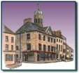

Places to see in Clonmel.
Main Guard

This elegant 17th Century building was built by James Butler 1st Duke of Ormond between 1673 and 1684 as a prestigious courthouse for the Palatine of County Tipperary. Among the buildings destroyed during Cromwells attack was the North Gate where manor courts were formerly held. The Duke of Ormonde ordered a new building to house the Palatine Court where civil and criminal cases were tried.
As well as a courthouse, there were private apartments, a dining room and a drawing room. The ground floor was an open arcade with 5 semi-circular arches at the West Side and similar arches on the north side. The Main Guard was a "Thosel" an office where tolls, duties and customs were collected. It was also a convenient place for civic gatherings. It was an assize court from 1716 until 1810 when it became a barracks hence the name Main Guard which still survives Fr Nicolas Sheehy was tried here in 1766.
Fr Nicolas Sheehy was well known for his opposition to Penal Law and was arrested for treason. He was found not guilty in Dublin but re-arrested and brought to Clonmel to face charges for the Murder of John Bridge who had been missing for two years. Another man named Edward Meehan was also arrested for the same crime. They were tried in the Main Guard and both were convicted and hanged It was later discovered that the Chief witnesses against them were coerced into giving perjured evidence, and the supposed victim was seen alive and well in Newfoundland
© 2004 Places to see in Clonmel.
I